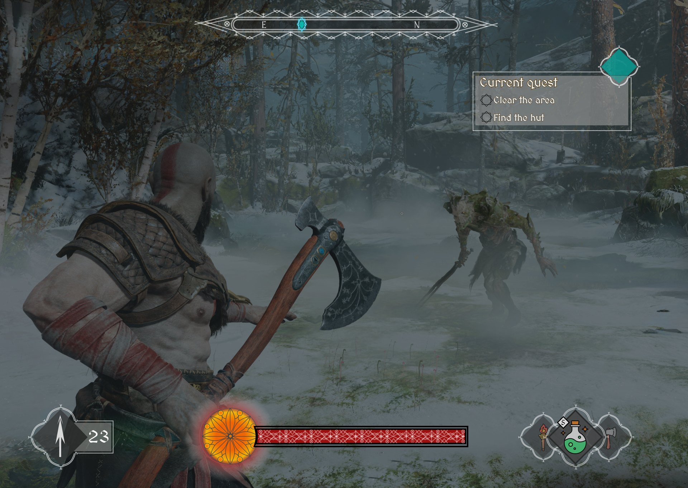
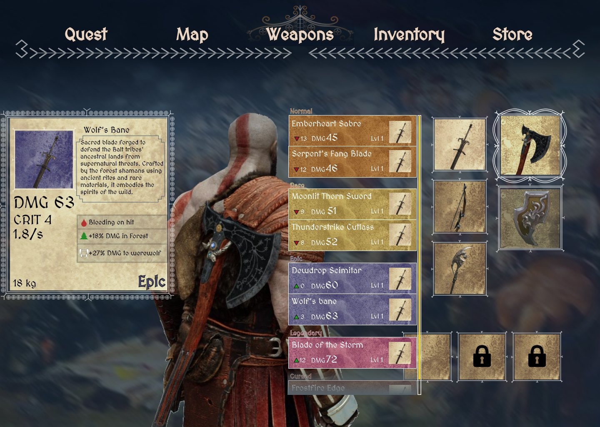
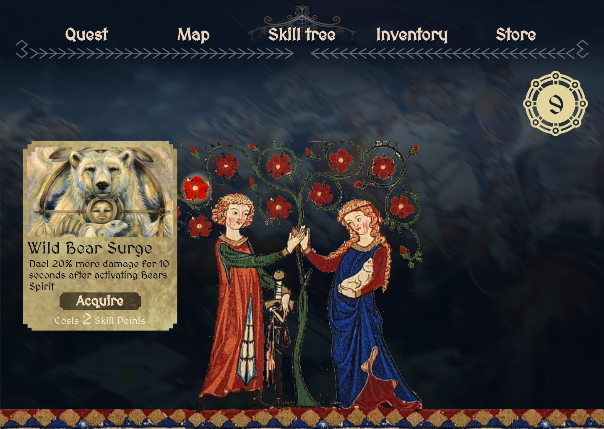
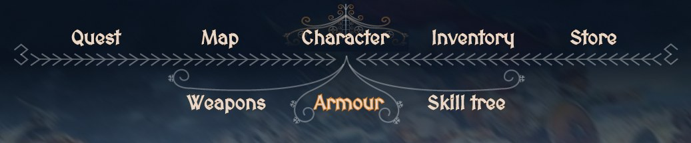
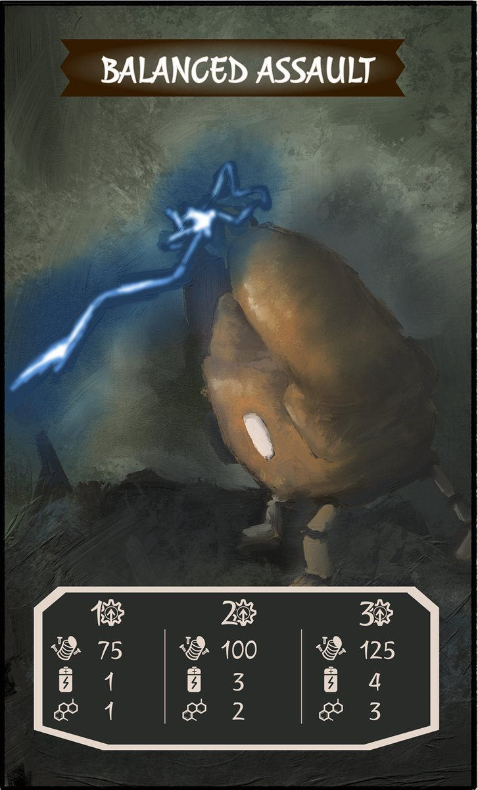
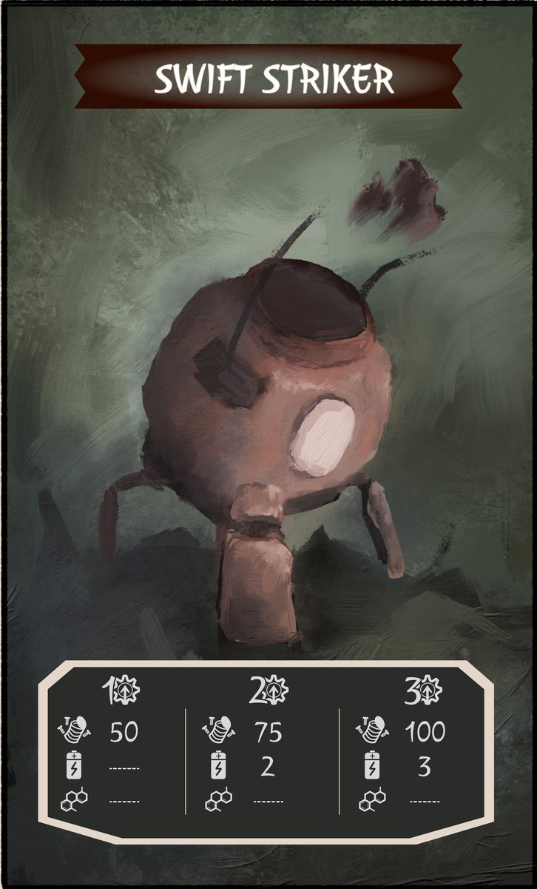
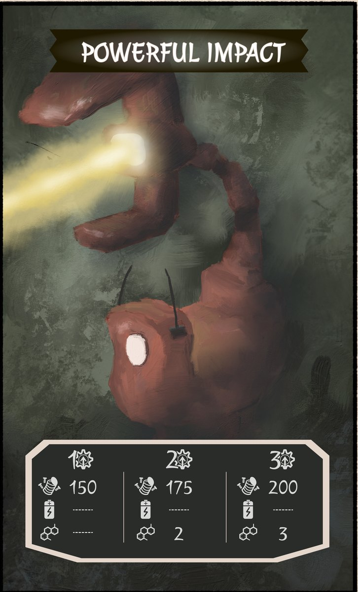

Interfaces that belong to the world
In games, I love UI that feels like part of the world instead of a layer on top. These are two projects where I explored that: the HUD and menus for a historical action RPG, and painted unit cards for an AR strategy game.
In-game HUD
The HUD for a historical action RPG I’d love to make one day. Every element borrows from the period: a compass bar with carved Nordic ornaments, a health bar framed by a stained-glass rose, and quick slots for a torch, potion and axe.
I kept the screen centre clear for combat and pushed information to the edges, grouped by how often the player needs it: direction at the top, the quest in the corner, health and items at the bottom.
Character and background are from God of War, used only as a placeholder to test the UI in a real game scene. The UI elements are my own.

Menus
The menu system has five main tabs. Character opens a second row for weapons, armour and the skill tree, so the top level stays short and the player always sees where they are.
In the weapons menu, rarity is shown by colour from normal to legendary, every weapon shows its damage and whether it’s better or worse than the current one, and the detail card reads like an old manuscript. The skill tree uses medieval illustration, with skills growing as flowers on a tree.
Character, background and illustrations are placeholder images from other sources. The layout, navigation, frames and item cards are my design.



AR tower defence cards
Unit cards for an augmented-reality tower defence game, which I painted digitally in Photoshop. The name tells you the unit’s role, and one panel shows the cost of all three upgrade levels in three resources, so players can compare units without opening anything.
Empty values are shown as a dash instead of zero, which keeps the panel calm and makes the resources each unit actually needs stand out.


